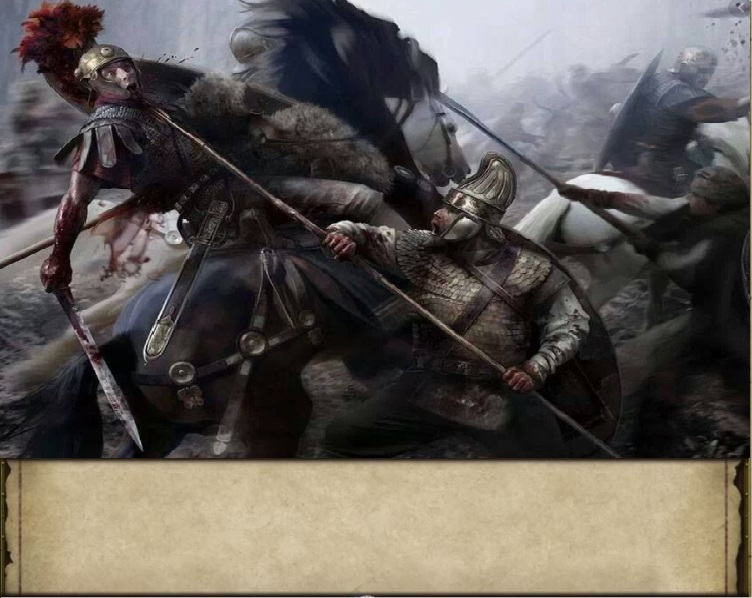
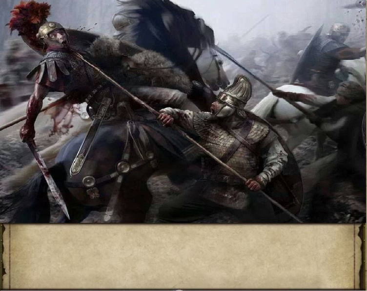

The calvary were wiped out by thier spears, terrible decision. Now all that remains is swordsmen. The only way we can bring it back is to form square formation as we are going to become surrounded.
1.Send men forward to hold them back then form a square.
 
